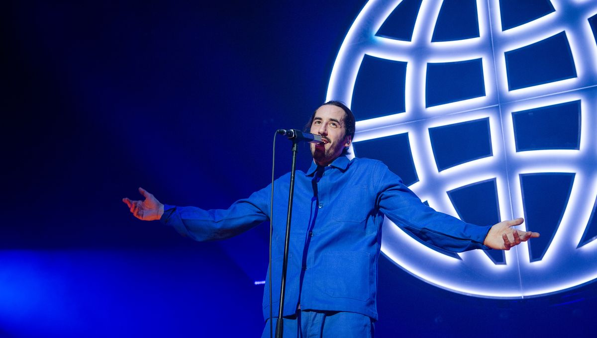

Antoine Valentinelli, dit Lomepal, né le 4 décembre 1991 dans le 14e arrondissement de Paris, est un rappeur et chanteur français.
Après ses débuts dans le rap en 2011, Lomepal publie quatre EP puis deux albums studio, FLIP, sorti en juin 2017 et certifié double disque de platine1, et que Jeannine, sorti en décembre 2018 et certifié quadruple disque de platine. En 2019, Lomepal sort la réédition de Jeannine sous le titre Amina.
En parallèle, il se lie d'amitié avec d'autres rappeurs comme les belges Caballero et JeanJass, mais aussi Roméo Elvis et Fixpen Sill. En 2017, Lomepal a déjà accumulé plus d'une centaine de concerts et 100 millions de vues sur sa chaîne YouTube2.
Le rappeur parisien doit son nom de scène à ses amis de jeunesse. En effet, ces derniers le croyaient toujours malade en raison de son teint pâle, d'où Lomepal, transcription phonétique de « l'homme pâle ». Son premier nom de scène était Jo Pump3.
Lomepal - 1000°C
feat. Roméo Elvis
Le plus streamé
Disque de platine - 2018